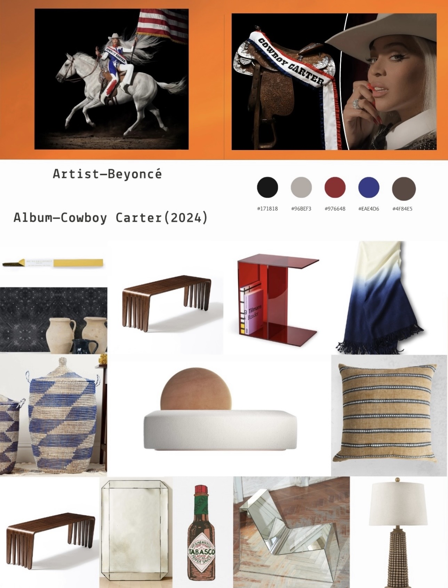
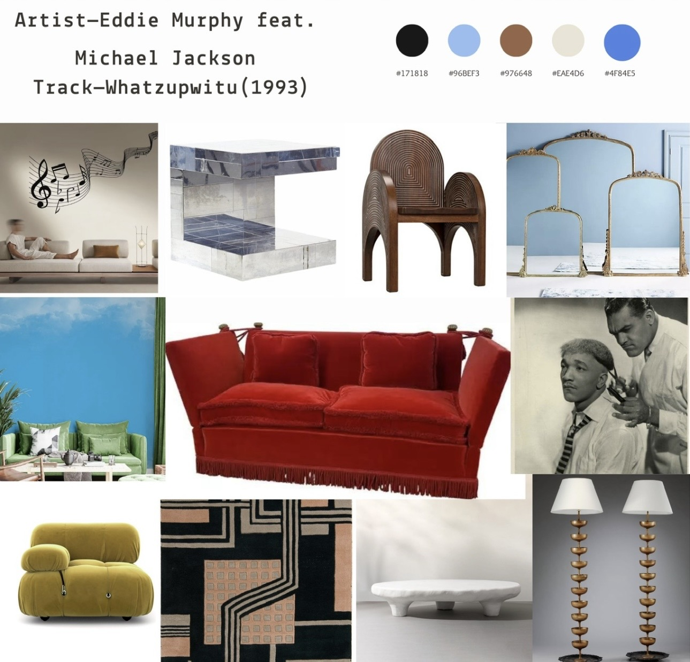

The collection
Albums as Interiors
Explore the collages and the stories behind each space.

In Rainbows
Radiohead · 2007

Big Willie Style
Will Smith · 1997

Cowboy Carter
Beyoncé · 2024

Hardcore
Lil' Kim · 1996

On the Radio
Donna Summer · 1979

The Electric Lady
Janelle Monáe · 2013

The Miseducation of Lauryn Hill
Lauryn Hill · 1998

Aretha Now
Aretha Franklin · 1968

Adventures in Paradise
Minnie Riperton · 1975

Whatzupwitu
Eddie Murphy feat. Michael Jackson · 1993

Whitney Houston
Whitney Houston · 1985

The Boss
Diana Ross · 1979